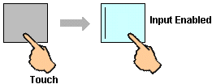
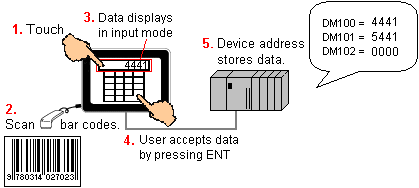
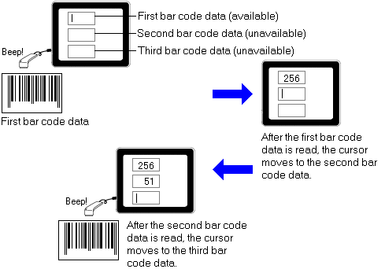
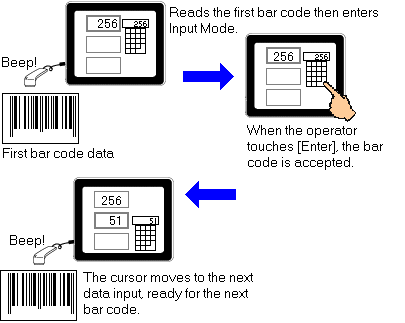

|
|
|
|
|
|
|
|
After setting up the bar code scanner driver and data display, download the user application and scan bar codes into the target machine. There are two modes for scanning bar code data, see Section 24.1.3, Direct Input and Use Enter Key Input Modes.
Enable input by touching the Numeric or String Display.

Scan data with the bar code scanner.
When mode is Direct Input:

Data is scanned into the bar code variable and stored in a variable (device address), which is displayed in a text object or data display part.
When mode is Use Enter Key:

Data is scanned and stored in the bar code variable. The data is displayed in the input mode where the user can modify and accept the data. Once the data is accepted, the data is written to a device address.

If you scan bar codes and the data does not display properly, the communication parameters set up in the Driver Configuration dialog box may not match the bar code. See Section 24.1.2, Setting Up the Bar Code Scanner Driver. In most cases the error is detected and an error message is displayed, but some bar code scanners escape error detection.
If you've set up Tab Groups, bar codes are scanned in sequence into data inputs.
When mode is Direct Input:

When mode is Enter Key:

In certain cases, you may have many items with the same bar code (for example, boxes that travel along a conveyor belt with the same product bar code), and you want to automatically trigger a script to perform an operation every time a bar code is scanned.
Typically, a script should check to see if data has changed before it executes. In this case, where the bar code is the same and the data hasn't changed, the script would not run. A script, such as the following, that counts the bar codes scanned can be used. The scanned bar code is saved to a string and the bar code variable is then changed to a non-empty string.
if (Barcode01.getStringValue().compareTo("") != 0)
{
MyString.write(Barcode01.getStringValue());
Barcode01.write(" ");
MyCount.write(MyCount.getIntValue() + 1);
}
This script enables the bar code to scan by changing the string value to a non-empty string. The data change then enables the script to execute.